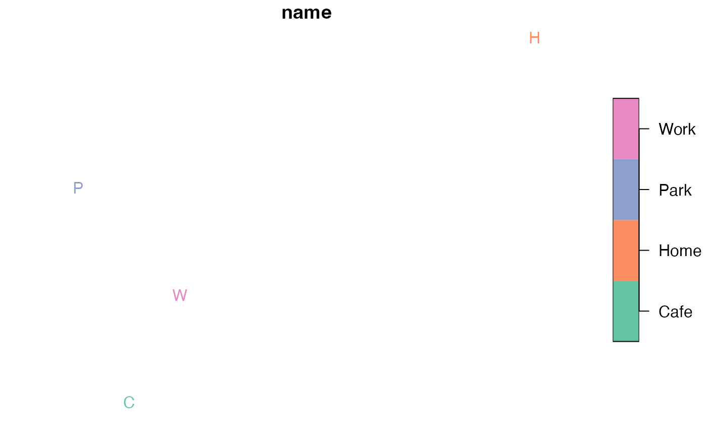
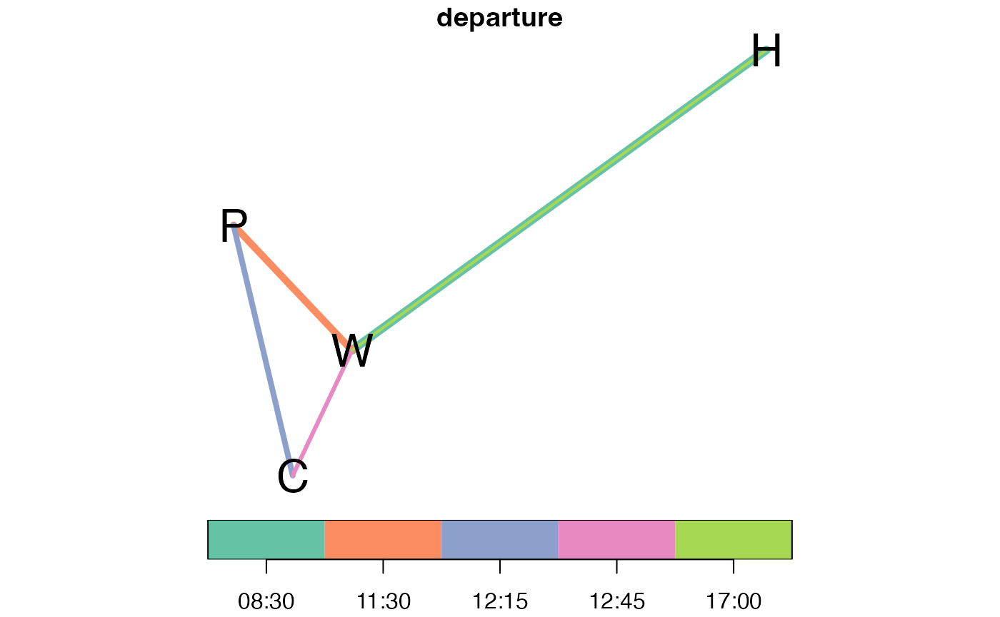

Introduction
Simple representations of transport systems based on origin-destination data often represent daily travel patterns as a single main trip per day, without distinguishing between multiple stages in a multi-stage trip (walk -> bus -> walk -> destination trips are simply represented as bus -> destination) or even multiple trips during the course of the day (omitting the fact that many people take a lunchtime trip to get lunch or simply to stretch their legs each day).
The concept of an ‘activity model’ aims to address these limitations by representing the complete list of activities undertaken by people throughout the day in the activity model. In this sense A/B Street can be seen as an activity model.
To show how A/B Street represents activity model data, we will take a hypothetical example, a trip from home to work and then to the park, to lunch and then to work before returning home after work. This 5 trip activity is more realistic that simple OD based models that just represents people travelling from home to work (and not back again in many cases), and is illustrated in the figure below.

How to get this information into a format for modelling? This article demonstrates how the data can be represented in R with the abstr package, and then converted into a format that can be imported by A/B Street.
Minimal example
In R code, the minimal example shown above can be represented as two data frames (tabular datasets), one representing trip origins and destinations and the other representing movement between them, as follows:
places = tibble::tribble(
~name, ~x, ~y,
"Home", -1.524, 53.819,
"Work", -1.552, 53.807,
"Park", -1.560, 53.812,
"Cafe", -1.556, 53.802
)
places_sf = sf::st_as_sf(places, coords = c("x", "y"), crs = 4326)
plot(places_sf, pch = places$name)
# mapview::mapview(places_sf, pch = places$name)
od = tibble::tribble(
~o, ~d, ~mode, ~departure, ~person,
"Home", "Work", "Bike", "08:30", 1,
"Work", "Park", "Walk", "11:30", 1,
"Park", "Cafe", "Walk", "12:15", 1,
"Cafe", "Work", "Walk", "12:45", 1,
"Work", "Home", "Bike", "17:00", 1
)The two datasets can be joined, giving spatial attributes (origin and destination locations creating a straight line) for each OD pairs, using the od_to_sf() function from the od package as follows:
od_sf = od::od_to_sf(od, places_sf)
#> 0 origins with no match in zone ids
#> 0 destinations with no match in zone ids
#> points not in od data removed.
plot(od_sf["departure"], reset = FALSE, key.pos = 1, lwd = 6:2)
plot(places_sf$geometry, pch = places$name, add = TRUE, cex =2)
# mapview::mapview(od_sf["departure"])As an aside, another way of representing the spatial attributes of the OD data: four columns with ‘X’ and ‘Y’ coordinates for both origins and destinations:
(od::od_coordinates(od_sf))
#> Linking to GEOS 3.8.1, GDAL 3.2.1, PROJ 7.2.1
#> ox oy dx dy
#> 1 -1.524 53.819 -1.552 53.807
#> 2 -1.552 53.807 -1.560 53.812
#> 3 -1.560 53.812 -1.556 53.802
#> 4 -1.556 53.802 -1.552 53.807
#> 5 -1.552 53.807 -1.524 53.819We will assign departure times and randomise the exact time (representing the fact that people rarely depart when they plan to, let alone exactly on the hour) with the ab_time_normal() function as follows:
departure_times = c(
8.5,
11.5,
12.25,
12.75,
17
)
set.seed(42) # if you want deterministic results, set a seed.
od_sf$departure = ab_time_normal(hr = departure_times, sd = 0.15, n = length(departure_times))The ab_json() function converts the ‘spatial data frame’ representation of activity patterns shown above into the ‘nested list’ format required by A/B Street as follows (with the first line converting only the first row and the second line converting all 5 OD pairs):
od_json1 = ab_json(od_sf[1, ], scenario_name = "activity")
od_json = ab_json(od_sf, scenario_name = "activity")Finally, the list representation can be saved as a .json file as follows:
ab_save(od_json1, f = "scenario1.json")That results in the following file (see activity_leeds.json in the package’s external data for the full dataset in JSON form):
file.edit("scenario1.json"){
"scenario_name": "activity",
"people": [
{
"trips": [
{
"departure": 313400000,
"origin": {
"Position": {
"longitude": -1.524,
"latitude": 53.819
}
},
"destination": {
"Position": {
"longitude": -1.552,
"latitude": 53.807
}
},
"mode": "Bike",
"purpose": "Work"
}
]
}
]
}You can check the ‘round trip’ conversion of this JSON representation back into the data frame representation as follows:
od_sf_roundtrip = ab_sf(json = system.file("extdata/activity_leeds.json", package = "abstr"))
identical(od_sf$geometry, od_sf_roundtrip$geometry)
#> [1] TRUE